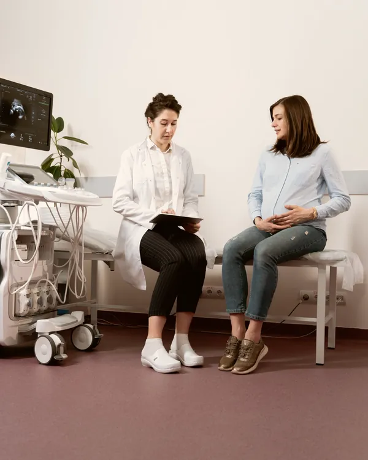
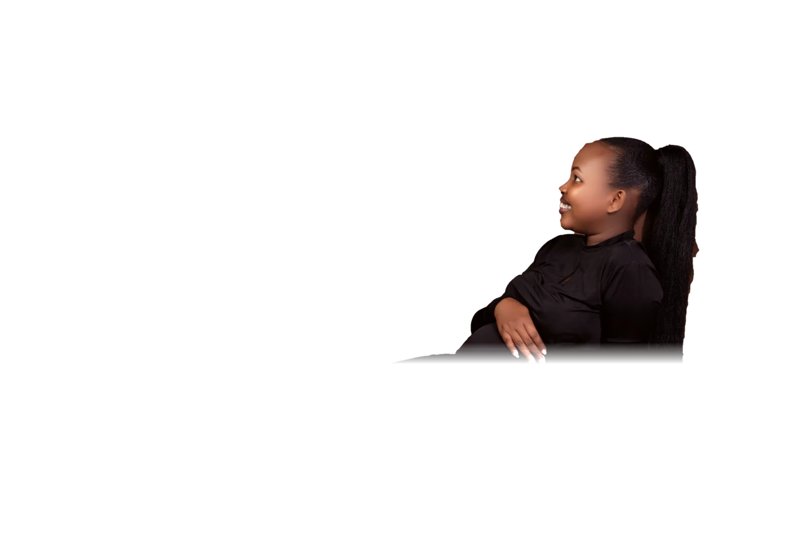
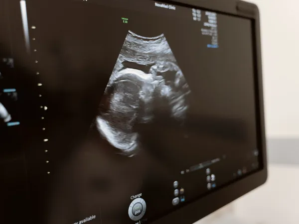
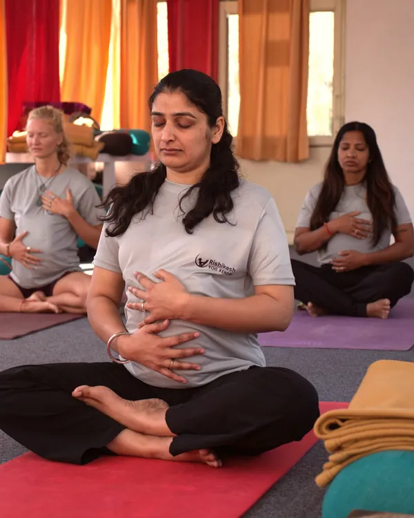
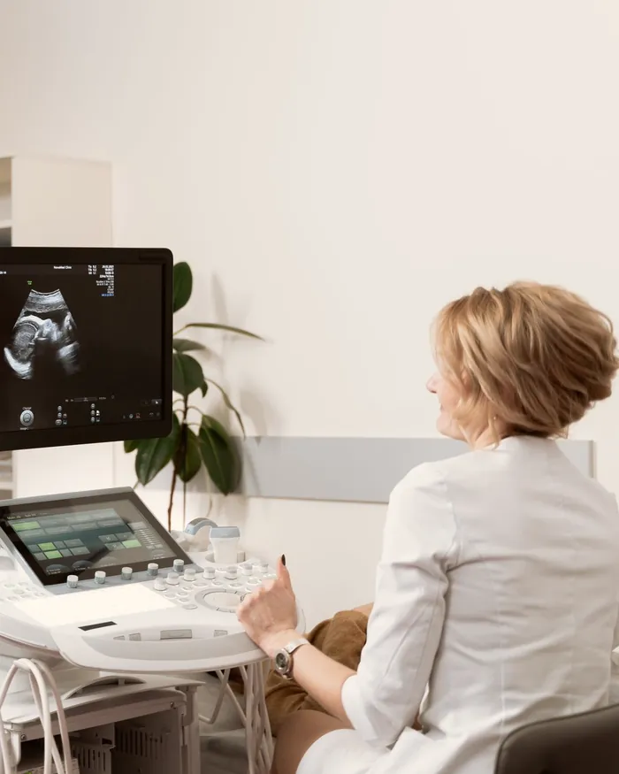
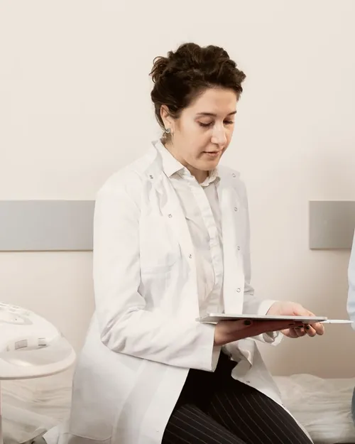
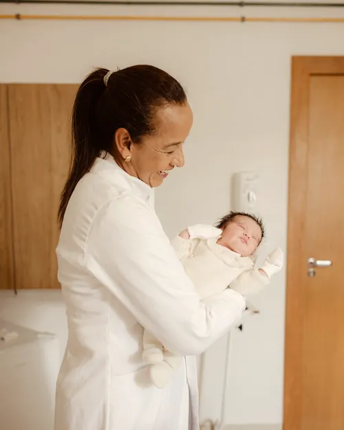

01
Pré-natal completo
Consultas mensais, depois quinzenais e semanais, com plano de exames escrito e entregue a você.

Obstetrícia e pré-natal · Umarizal, Belém
Obstetrícia e pré-natal · Belém
Pré-natal, ultrassom, preparo para o parto e pós-parto com a mesma equipe, que conhece a sua história desde a primeira consulta.
A clínica
Consultas de quarenta minutos, exames no mesmo andar e uma equipe pequena que acompanha a gestação inteira. Você sai de cada encontro sabendo o que vem a seguir, e com um número para chamar quando a dúvida aparece às três da manhã.
Como funciona o acompanhamento →Acompanhamento

Consultas mensais, depois quinzenais e semanais, com plano de exames escrito e entregue a você.

Morfológico, obstétrico e doppler na própria clínica, explicados com calma.

Encontros em grupo sobre respiração, posições, plano de parto e os primeiros dias em casa.
Revisão do puerpério, consultoria de amamentação e cuidado emocional nas primeiras semanas.

Plano de parto
A partir da 28ª semana, sentamos juntas para desenhar o plano de parto: onde, com quem, quais intervenções você aceita e quais prefere evitar. O documento vai para a maternidade com a sua assinatura e a nossa.
Semana a semana
Arraste a régua e veja o tamanho do bebê, o que acontece agora e o que entra na agenda de exames.
Ele já ouve a sua voz e os batimentos do seu coração.
Na hora do parto
Uma médica da equipe atende o telefone em qualquer horário, inclusive fins de semana.
Acompanha o trabalho de parto em casa e na maternidade, conforme o plano.
Apoio contínuo, massagem, posições e presença para a família.
Em casa ou na clínica, entre o 5º e o 10º dia após o nascimento.
Escuta
Toda consulta começa por você: como dormiu, o que sentiu, o que leu e ficou martelando. O exame vem depois, e cada número é explicado no papel e de viva voz.
Passe o cursor pela foto.
Equipe

Obstetra · CRM-PA 00000
Coordena o pré-natal e o plano de parto. Gosta de consulta longa e de explicar exame com desenho.

Enfermeira obstetra · COREN-PA 000000
Trabalho de parto, amamentação e as primeiras semanas em casa.
Medicina fetal · CRM-PA 00000
Ultrassom morfológico, doppler e gestações de alto risco.
Assim que o teste der positivo. O ideal é começar antes da 12ª semana, quando entram os primeiros exames e o ultrassom de datação.
Atendemos particular com reembolso facilitado e alguns convênios para exames. Na marcação confirmamos o seu plano.
Sim. Conversamos sobre riscos e benefícios de cada via ao longo do pré-natal, e a decisão final é registrada no plano de parto.
Pode e deve. As salas foram pensadas para receber a família.
O plantão obstétrico atende 24 horas pelo telefone e pelo WhatsApp da clínica.
Contato
Av. Senador Lemos, 0000, sala 702 · Umarizal, Belém-PA
Segunda a sexta, 8h às 19h · sábado, 8h às 12h